A comprehensive analysis of student challenges, awareness, and aspirations — collected through a Google Form survey across India.
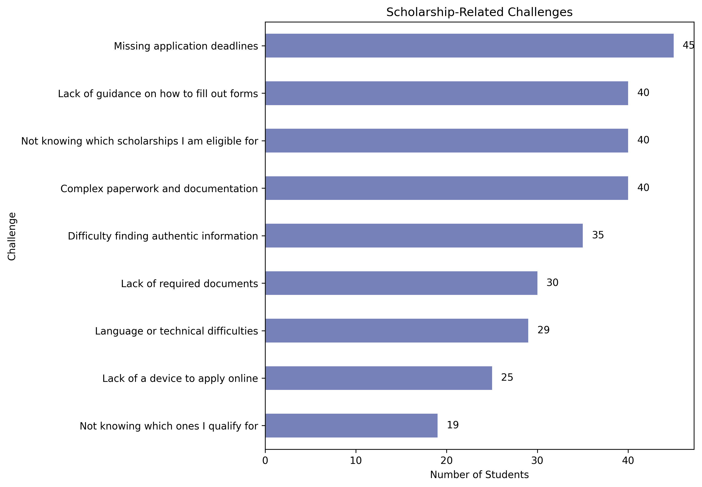
Students face multiple barriers when applying for scholarships. Missing application deadlines (45 students) is the top challenge, followed equally by lack of form-filling guidance, not knowing eligibility, and complex documentation (40 each). This directly motivated the core features of ScholarPath — deadline reminders, eligibility matching, and document checklists.
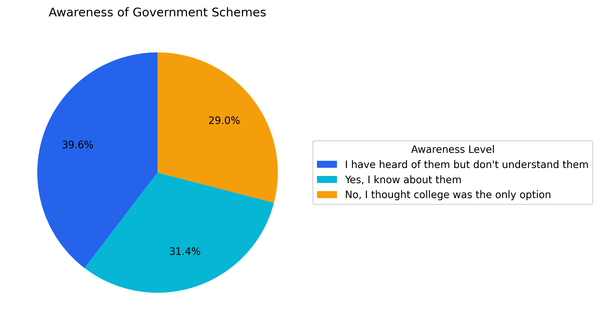
A significant portion of surveyed students lack awareness about government scholarship schemes and educational programs. This highlights the critical gap ScholarPath aims to bridge by making government schemes discoverable and accessible.
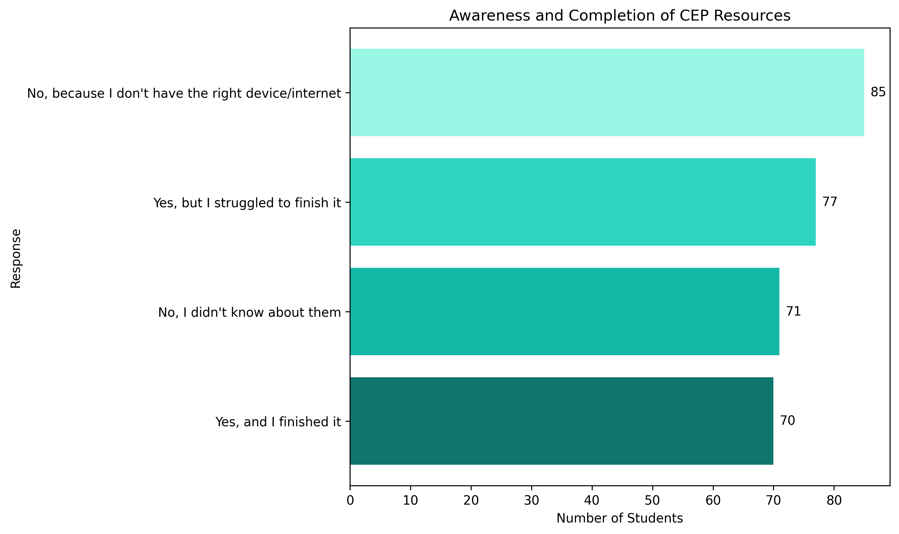
Awareness about Continuing Education Programs among students remains limited. Many students are unaware of upskilling pathways available to them through government and private initiatives, pointing to a clear need for a centralized information hub.
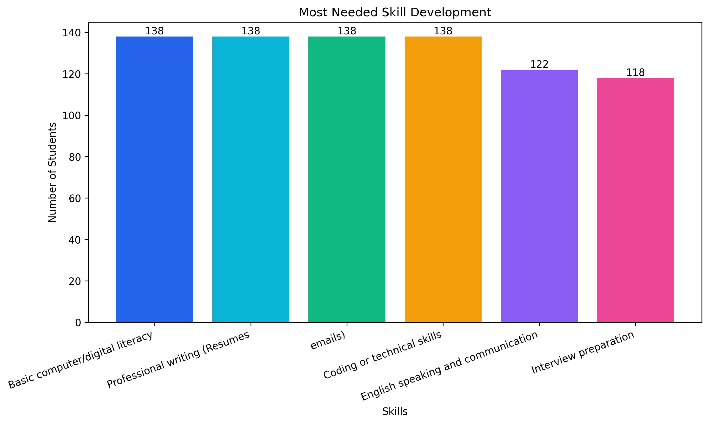
All major skill categories received near-equal demand (~138 students each) — Basic computer/digital literacy, Professional writing, Coding/technical skills and Coding or technical skills top the list. English communication (122) and Interview preparation (118) follow closely. This data shaped the Free Courses page, ensuring coverage of all high-demand skill areas.
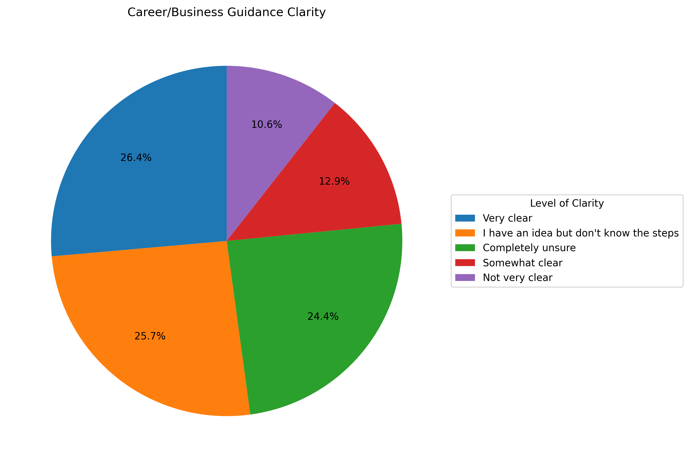
Only 26.4% of students are "Very clear" about their career path. A combined 63% are either completely unsure (24.4%), have an idea but don't know the steps (25.7%), or somewhat clear (12.9%). This underscores the need for structured career guidance resources.
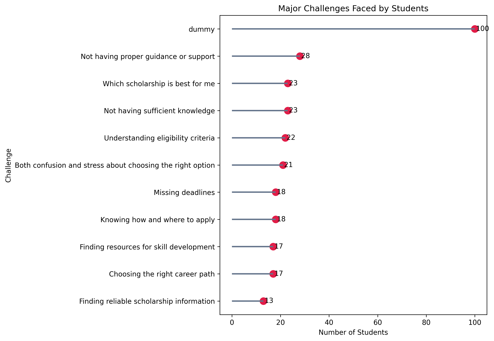
"Not having proper guidance or support" (28 students) leads student challenges, followed by confusion around which scholarship is best (23) and insufficient knowledge (23). These challenges map directly to features like personalized recommendations and the career guidance section.
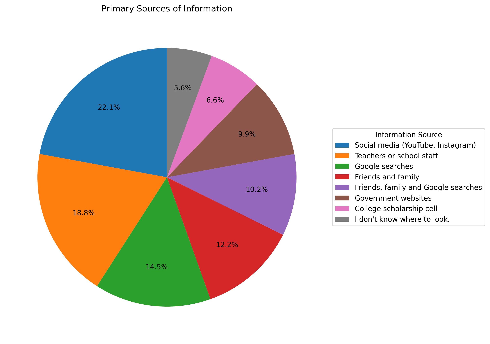
Understanding where students currently find scholarship information helps identify the most effective outreach channels and validates building a dedicated web platform as the primary discovery tool.
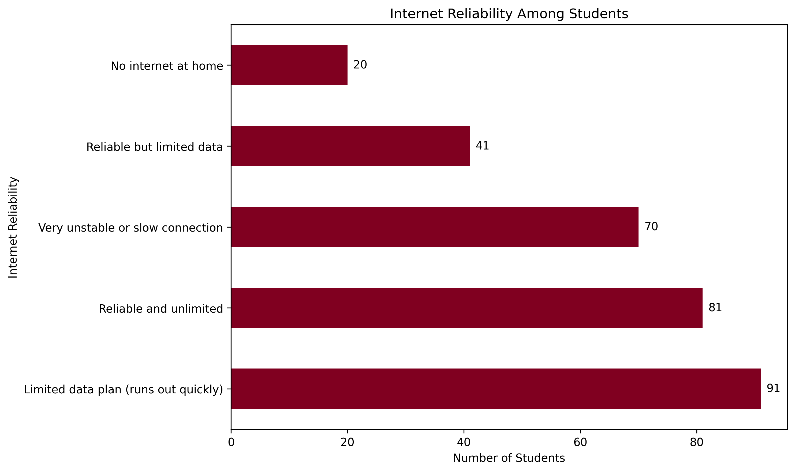
Internet access reliability directly impacts a student's ability to apply online for scholarships. This data helps assess the digital divide and guides decisions on making the platform lightweight and mobile-friendly.
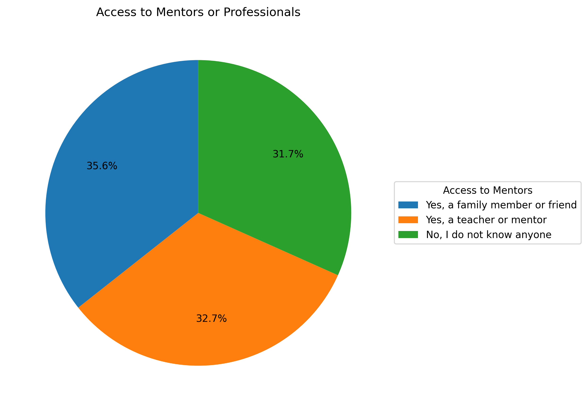
Access to mentors and career advisors is limited for many students, particularly those from rural and semi-urban backgrounds. This reinforces the platform's role as a digital mentor — providing structured guidance without requiring physical access.
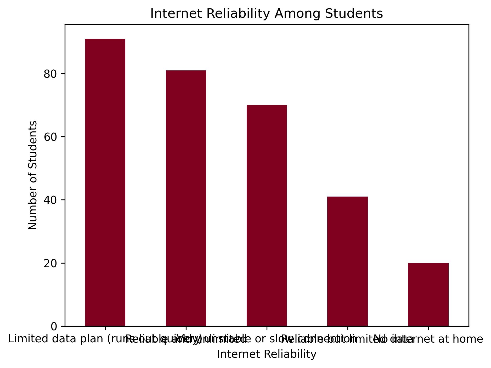
Students' preferred platforms for learning and skill development reveal strong demand for accessible, free online resources. This data directly shaped the curation of courses on the Free Courses page.
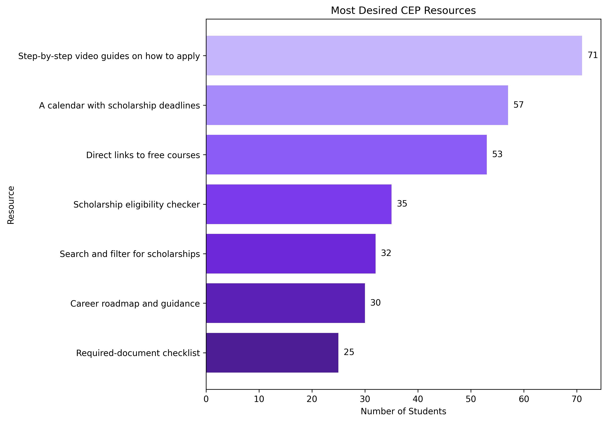
When asked what CEP resources they most desire, students' responses highlight a strong appetite for structured, accessible, and free educational content. This finding validates ScholarPath's Free Courses page as a high-impact addition that directly serves student demand.
45 students miss deadlines and 40 don't know their eligibility — making ScholarPath's smart matching and deadline tracking essential.
Digital literacy, coding, and professional writing are equally needed by 138 students each — validating a dedicated Free Courses page.
Only 26.4% are "Very clear" on their career path — 63% need structured guidance, underscoring the need for mentorship and resource tools.
Every feature on this platform was designed based on real student pain points discovered in this survey.